Atualizar minhas informações
Observação
Uma vez que sua conta tenha sido validada e ativada, suas informações de contato, negócios e vendas não podem ser atualizadas usando o módulo PayU. Se você precisar atualizar essas informações, entre em contato com sac@payu.com.Mudar senha
Siga estas etapas para alterar sua senha atual.
- No canto superior direito, clique no símbolo ▾ ao lado do seu endereço de e-mail para exibir as configurações de usuário disponíveis.
Clique em Meu perfil.
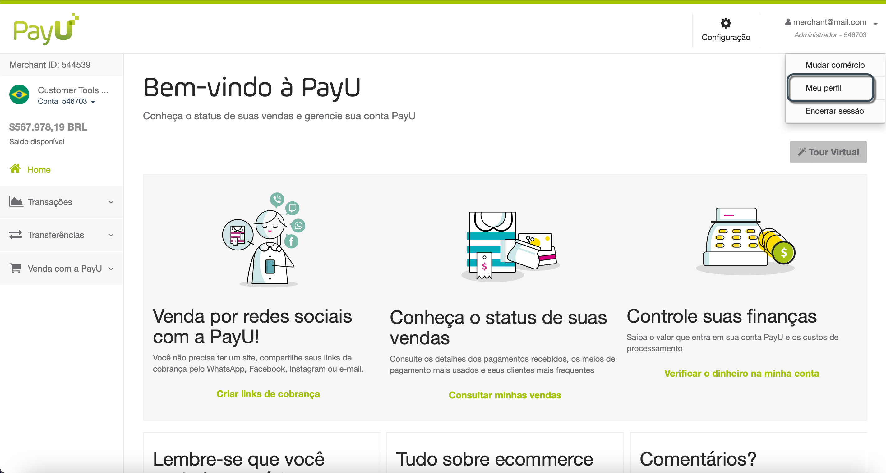
- Na tela Meu perfil, clique em Mudar senha.
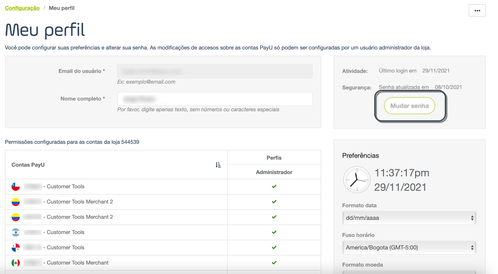
- O painel Mudar senha aparece. Você deve inserir aqui a senha atual e a nova senha duas vezes.
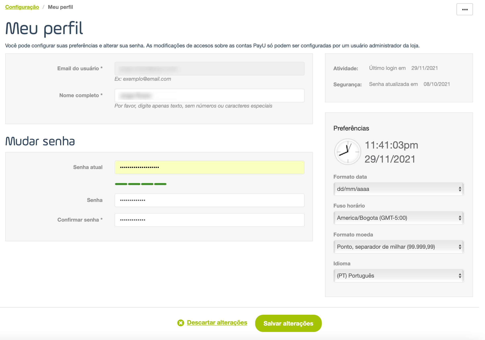
- Assim que terminar, clique em Salvar alterações no rodapé da seção. Para descartar a alteração de sua senha, clique em Descartar alterações para fechar o painel Mudar senha.
Atualize suas preferências de usuário
Nesta seção, você pode alterar as configurações de visualização das informações exibidas em seu módulo, como formato de data, fuso horário de seu país, formato de moeda e idioma.
Para isso, clique no símbolo ▾ ao lado do seu endereço de e-mail para exibir as configurações de usuário disponíveis. Clique em Meu perfil.
Na tela Meu perfil localize o painel Preferências.
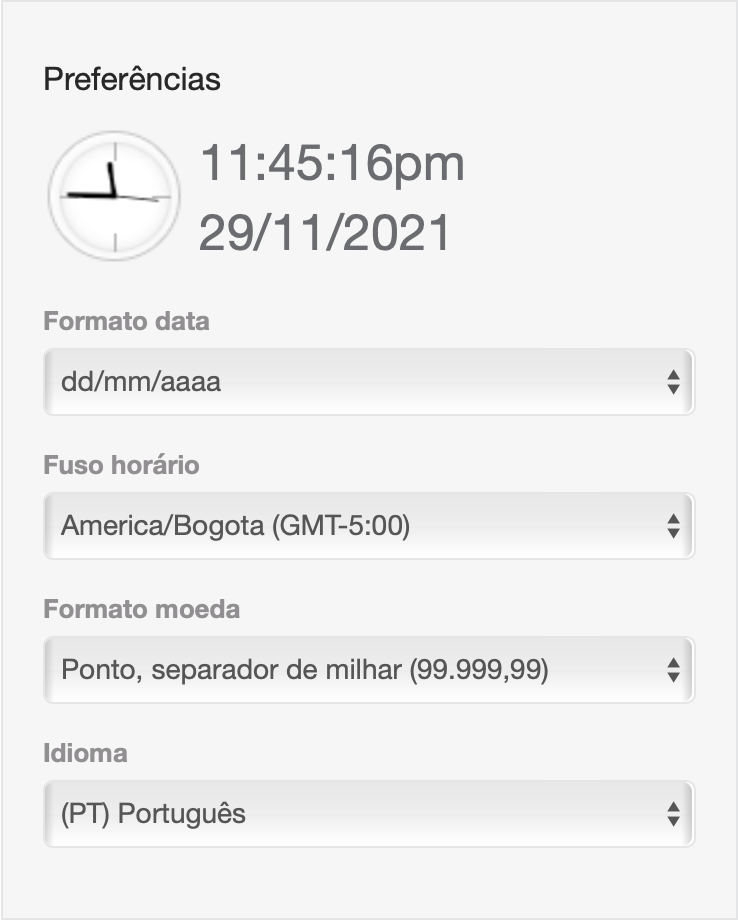
Na parte superior do painel, há um exemplo da data e hora atuais do fuso selecionado no formato de sua escolha.
Formato de data
Altere o formato em que deseja exibir as datas em seu Módulo PayU.

Você pode usar qualquer um dos seguintes formatos:
| Formato | Exemplo 24 de agosto de 2021 |
|---|---|
| dd/mm/aaaa | 24/08/2021 |
| mm/dd/aaaa | 08/24/2021 |
| aaaa/mm/dd | 2021/08/24 |
| aaaa/mmm/dd | 2021/Ago/24 |
| dd-mm-aaaa | 24-08-2021 |
| mm-dd-aaaa | 08-24-2021 |
| aaaa-mm-dd | 2021-08-24 |
| aaaa-mmm-dd | 2021-Ago-24 |
Fuso horário
Altere o fuso horário do país no qual deseja exibir as informações da transação.

Formato de moeda
Altere o formato dos valores monetários mostrados em seu módulo PayU.

Idioma
Altere o idioma do seu módulo PayU.

Observação
Depois de alterar qualquer uma das configurações do usuário, não se esqueça de clicar em Salvar alterações no rodapé da seção.Mudar o seu logotipo
No módulo PayU, você pode fazer o upload do logotipo de sua loja para que apareça em nosso Web checkout.
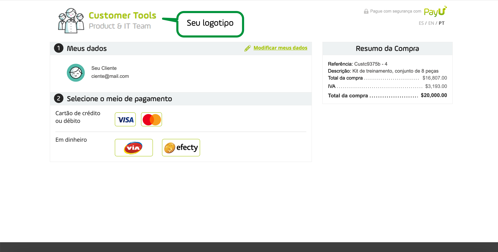
Para fazer upload ou atualizar seu logotipo, siga estas etapas.
- Nas opções de conta, expanda a conta atual usando o símbolo▾. Em seguida, selecione Dados de vendas.
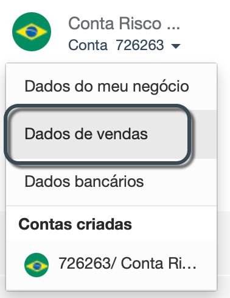
- Na janela Dados da suas vendas, encontre o campo Merchant logo.
Se você ainda não fez o upload de um logotipo, clique no link Escolha o seu logotipo. Caso contrário, use o link Mudar o logo.
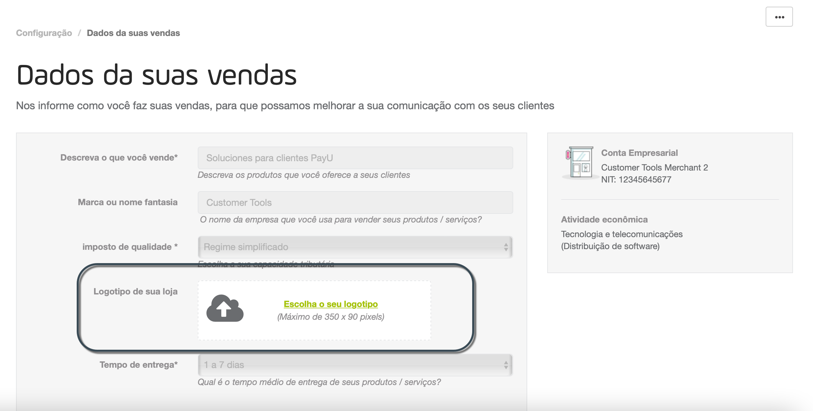 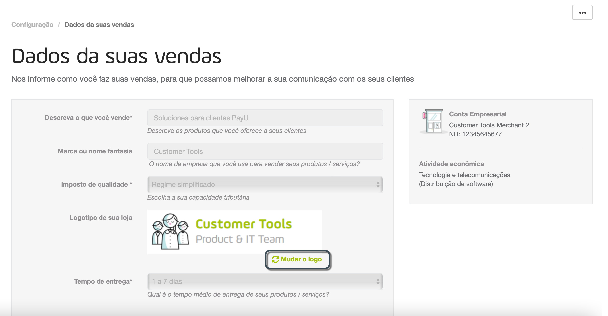
-
O painel de upload aparecerá. Localize a imagem do seu logotipo em seu computador.
-
O tamanho máximo permitido para o seu logotipo é 350x90 pixels. Se a imagem selecionada for maior que esse tamanho, você pode recortá-la usando o painel de upload. Este painel também oferece opções para ampliar ou girar a imagem.
Quando terminar, clique Salvar.
Solicitar a alteração da sua conta bancária
Assim que sua conta for verificada por nossa equipe de riscos, você pode solicitar a atualização de suas informações bancárias. Por motivos de segurança, a atualização das informações bancárias deve ser verificada novamente, assim como quando você cria a conta.
Para solicitar a atualização da sua conta bancária, expanda a opção Transferências no menu esquerdo. Então, selecione Editar dados bancários.

A opção Dados bancários abre. Clique no link Editar para habilitar os campos da conta bancária.
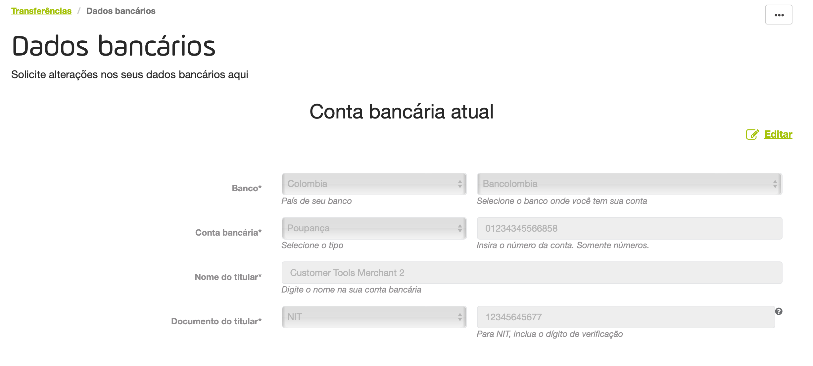
Forneça as informações relacionadas à sua conta bancária, como: país, banco, número da conta etc
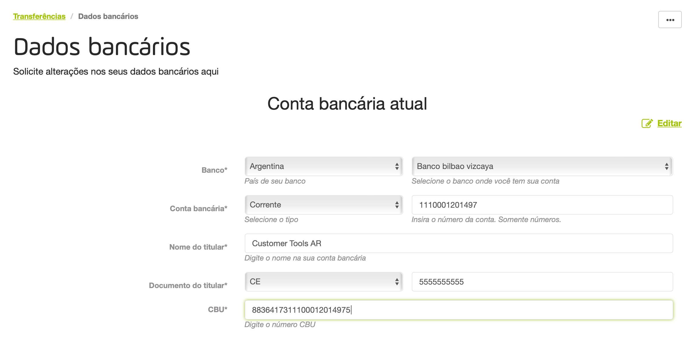
Considerations
- As informações disponíveis dependem do país de sua conta.
- Se a conta bancária for estrangeira, você deve fornecer as informações do Banco intermediário como nome, Código ABA e Código Swift.
Junto com as informações fornecidas, você precisa anexar uma certificação* emitida por seu banco para comprovar a veracidade e autenticidade das informações.
* Dependiendo de su país, es posible que deba adjuntar más documentos.
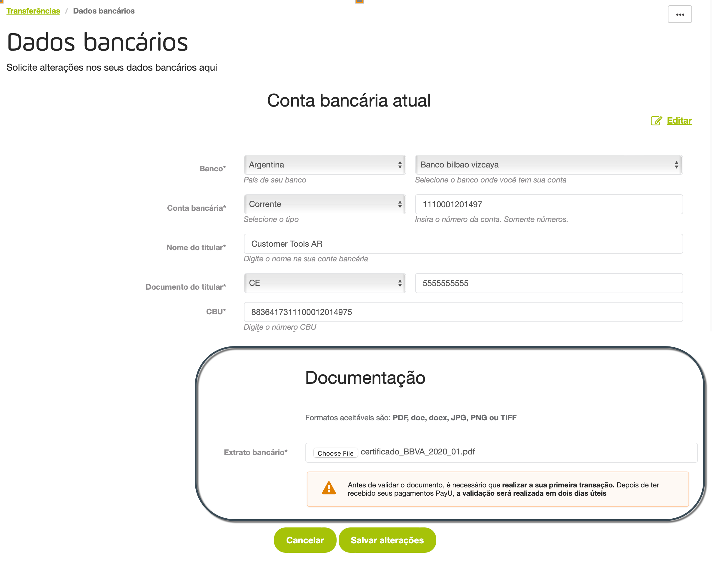
Quando terminar, clique em Salvar alterações. Quando as informações são enviadas, você é questionado sobre o resultado da operação.

Além disso, você recebe um e-mail informando a solicitação e fornecendo o número do ticket.
O procedimento de validação da sua conta leva até dois dias úteis. Enquanto isso, as informações que você fornece são carregadas no painel Conta bancária em análise.
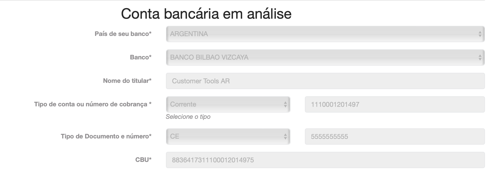
Assim que as informações de sua conta bancária forem validadas por nossa equipe de Risco, você poderá transferir para ela os fundos arrecadados em sua conta PayU. Enquanto a nova conta está em validação, as transferências que você faz são enviadas para a conta bancária anterior.